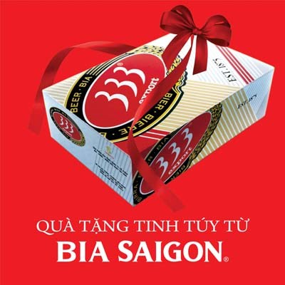

Giới thiệu
-Bia hơi Sài Gòn là một sự đột phá làm thay đổi thói quen và cảm nhận của người Hà Nội bấy lâu nay chỉ biết đến với một số loại bia cỏ không đảm bảo chất lượng. Nếu bạn được 1 lần thưởng thức hương vị bia hơi Sài Gòn chắc hẳn bạn sẽ không thể quên được hương vị của bia hơi Sài Gòn!
-Được làm từ gạo, nước, đại mạch và hoa bia, là loại bia không pha trộn, sản phẩm bia hơi Sài Gòn nhanh chóng tạo được chỗ đứng và trở thành loại bia ưa thích của người dân Hà thành nói riêng và miền Bắc nói chung.
-Từ ngày 01/07/2015 công ty tạm dừng hỗ trợ điểm bán mới. Vui lòng liên hệ với nhà phân phối.
-Nhằm mục đích phát triển thị trường ngày một rộng lớn, với mỗi điểm bán hàng mới (tùy theo quy mô cửa hàng) nhà phân phối hỗ trợ các vật phẩm sau:
+Khay bê bia.
+Biển hiệu quảng cáo.
+Phập bom bia.
+Vòi rót bia.
+Đồng hồ đo áp xuất CO2.
+Hỗ trợ 50% giá khi khách hàng mua cốc có quai có in logo bia SaiGon của công ty bia Sài Gòn.
+Hỗ trợ nhân viên kỹ thuật thiết kế, lắp đặt tủ ướp bia theo tiêu chuẩn của Tổng công ty.
+Chịu trách nhiệm về chất lượng sản phẩm trong suốt quá trình kinh doanh.
Ngoài ra, để tạo sự phát triển chung của bia hơi Sài Gòn - Hà Nội công ty liên tục có những chương trình khuyến mại hấp dẫn đến với khách hàng.
Chú ý: Với bia hơi Sài Gòn các bạn hoàn toàn yên tâm về chất lượng của Bia. Khi các bạn mở bom bia bán trong ngày mà không hết vẫn có thể bán tiếp các ngày tiếp theo và bia không thay đổi về chất lượng. Nhà máy bảo hành bia cho các bạn trong vòng 01 tháng.
Khuyến mãi
|  | Từ ngày 29/4 - 9/9 năm 2016, bia Sài Gòn có chương trình khuyến mãi mua 1 tặng 3. Trong đó khi mua hàng tại các đại lý chính hãng sẽ được tặng thêm 3 lon bia 333 khi mua 1 thùng bia Sài Gòn bất kỳ. |